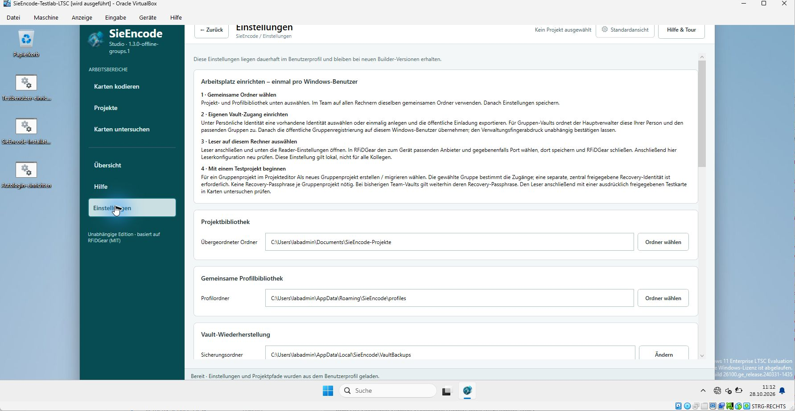
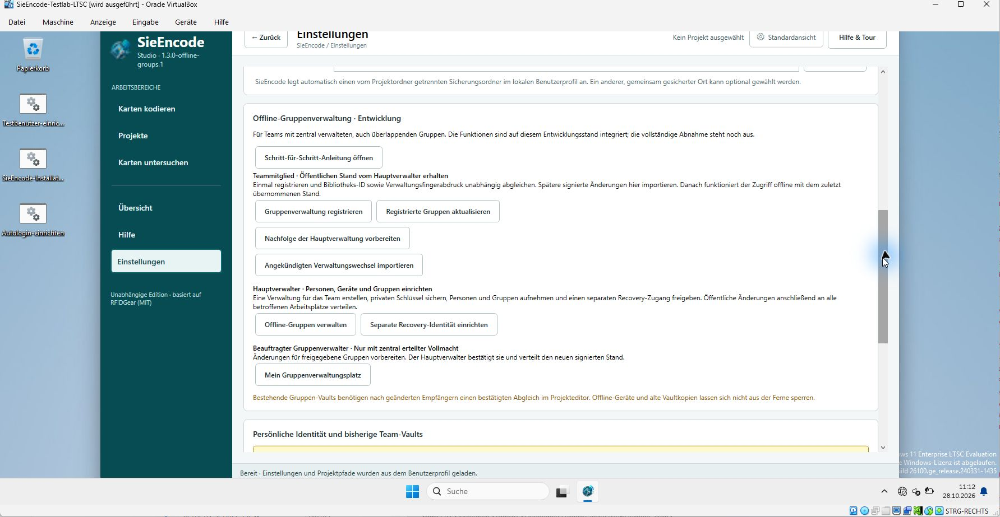

SieEncode · Gemeinsam starten
SieEncode · Anleitung für Kollegen
Gemeinsam starten.
Mit dem eigenen Zugang.
Eine zentrale Verwaltung, mehrere Gruppen und ein persönlicher Zugang je Arbeitsplatz. Nach der Einrichtung lassen sich lokal vorhandene, freigegebene Projekte auch offline entschlüsseln.
Entwurf für 1.3.0-offline-groups.1 · 29.10.2026. Nicht für Version 1.2.1. Beschriftungen mit dem Quellstand abgeglichen; vollständiger sichtbarer Bedienlauf noch offen. Die gekennzeichneten Originalansichten stammen aus der synthetischen Test-VM vom 28.10.2026. Weitere Verwaltungs- und Projektabläufe sowie die Leserabnahme stehen noch aus.
1Ich richte meinen Zugang ein
Eigene Identität auswählen und eine öffentliche Einladung an die Hauptverwaltung geben.
2Die Verwaltung ordnet mich zu
Meine Person und mein Gerät werden den passenden Gruppen zugeordnet.
3Ich bestätige die Verwaltung
Öffentliche Registrierung importieren und den Fingerabdruck unabhängig abgleichen.
Vorher bereitlegen: freigegebenen MSI-Installer, Projekt- und Profilordner vom Verantwortlichen sowie dessen Kontakt für den Fingerabdruckabgleich. Die Hauptverwaltung muss Gruppen und einen separaten Recovery-Zugang vorbereitet haben.
Jedes Teammitglied · einmal je Windows-Benutzer
Mein Arbeitsplatz in sechs Schritten
- SieEncode installieren und öffnen. Den bereitgestellten MSI-Installer ausführen. Bei fehlenden Installationsrechten die zuständige IT hinzuziehen. Ein Update kann eine ältere SieEncode-Version ersetzen; es erfordert keine neue persönliche Identität.
- Gemeinsame Ordner einstellen. Unter Einstellungen die Projektbibliothek und Gemeinsame Profilbibliothek auswählen, dann Einstellungen speichern. Die Verwaltung nennt die passenden Ordner. Dateizugriff und Vaultfreigabe sind getrennte Voraussetzungen.
- Persönliche Identität verwenden. Vault-Ersteinrichtung starten, vorhandene eigene Identität auswählen oder einmalig eine neue erstellen. Öffentliche Einladung exportieren und nur diese Datei an die Hauptverwaltung geben. Für Gruppen-Vaults keine alte Teamliste pflegen oder speichern; anschließend den Dialog schließen.
- Nach Aufnahme die Verwaltung registrieren. Unter Offline-Gruppenverwaltung → Gruppenverwaltung registrieren die erhaltene
.group-enrollment.json öffnen. Bibliotheks-ID und Verwaltungsfingerabdruck persönlich oder über einen unabhängig bestätigten Kontakt abgleichen. Den erhaltenen SHA-256-Fingerabdruck eingeben und bestätigen. Eine passende Datei allein beweist nicht, dass sie vom eigenen Team stammt.
- Leser lokal einstellen. Leser anschließen, Reader-Einstellungen in RFiDGear öffnen. Passenden Anbieter und gegebenenfalls Port wählen, dort speichern und RFiDGear schließen. Zurück in SieEncode Leserkonfiguration neu prüfen. Diese Prüfung liest die Konfiguration; sie bestätigt noch keine funktionierende Kartenkommunikation.
- Mit einem freigegebenen Testprojekt prüfen. Projekt öffnen, schließen und erneut öffnen. Für die erste Leserprüfung nur eine ausdrücklich geeignete Testkarte in Karten untersuchen verwenden. Unbekannte Karten nicht beschreiben. Ein fehlender Leser verhindert nicht die Einrichtung der Gruppenregistrierung.
Erwarteter Zustand: Die eigene Identität bleibt vorhanden; die richtige Bibliothek ist registriert; berechtigte Projekte öffnen. Die Anzeige „Teammitglieder“ im alten Team-Vault-Bereich belegt keine Gruppenmitgliedschaft.
So sieht die Einrichtung aus
Originalansichten des Testkandidaten. Die Beispielpfade und Bibliotheks-ID nicht übernehmen: Verwende die Angaben deiner Hauptverwaltung.

1 · Arbeitsplatz. In Einstellungen die vom Team verwendeten Ordner auswählen. Die abgebildeten lokalen Testpfade sind keine Vorgabe.

2 · Die eigene Rolle wählen. Als Teammitglied einmal „Gruppenverwaltung registrieren“ verwenden; spätere Änderungen über „Registrierte Gruppen aktualisieren“ übernehmen.
 3 · Verwaltung bestätigen. Bibliotheks-ID und Fingerabdruck unabhängig prüfen. Der Test zeigt zwei Gruppen; euer Team kann mehr Gruppen verwenden. Niemals einen Beispiel-Fingerabdruck aus einer Anleitung eingeben.
3 · Verwaltung bestätigen. Bibliotheks-ID und Fingerabdruck unabhängig prüfen. Der Test zeigt zwei Gruppen; euer Team kann mehr Gruppen verwenden. Niemals einen Beispiel-Fingerabdruck aus einer Anleitung eingeben.
Im dokumentierten Test meldete SieEncode anschließend die erfolgreiche Registrierung. Nach Schließen und erneutem Öffnen erkannte die Anwendung denselben Gruppenstand wieder. Das bestätigt die lokale Speicherung; eine Gruppenmitgliedschaft entsteht dadurch noch nicht.
Nur HauptverwaltungEin Team, drei überlappende Gruppen
Eine Verwaltung genügt für dieses Beispiel. Jede Person kann mehreren Gruppen angehören und mehrere eigene Geräteidentitäten besitzen.
Gewünschte Freigaben · ✓ Mitglied · – kein Mitglied| Gruppe / Person | 1 | 2 | 3 | 4 | 5 | 6 | 7 | 8 |
|---|
| Lokal | ✓ | ✓ | ✓ | ✓ | ✓ | ✓ | ✓ | ✓ |
|---|
| Lokal 2 | – | – | ✓ | ✓ | ✓ | – | – | ✓ |
|---|
| Lokal 3 | ✓ | ✓ | ✓ | – | – | ✓ | ✓ | ✓ |
|---|
- Einstellungen → Offline-Gruppen verwalten: Verwaltung einmalig erstellen. Für eine vorhandene Bibliothek keine Ersatzverwaltung anlegen. Privaten Schlüssel sichern; Sicherungsdatei und Passphrase getrennt verwahren.
- Personen anlegen, öffentliche Geräteeinladungen aufnehmen und Fingerabdrücke unabhängig bestätigen. Jedes weitere Gerät benötigt eine eigene Identität. Personen den passenden Gruppen zuordnen und Gruppen signiert speichern.
- Separate Recovery-Identität einrichten: eigene verschlüsselte Sicherung erstellen; nur die öffentliche Recovery-Einladung an die Hauptverwaltung geben. Unter Separate Recovery-Zugänge nach Fingerabdruckabgleich aufnehmen und den Gruppenstand signiert speichern. Recovery gilt für die ganze Bibliothek.
- Gespeicherten Stand öffentlich exportieren. Die öffentliche Datei verteilen und Bibliotheks-ID sowie Verwaltungsfingerabdruck unabhängig bestätigen lassen. Jeder Arbeitsplatz registriert seinen Stand lokal.
Verwalten heißt nicht automatisch entschlüsseln. Auch die Hauptverwaltung braucht für normale Projektarbeit eine persönliche Gruppenmitgliedschaft. Beauftragte Gruppenverwalter dürfen nur Anträge für ihre freigegebenen Gruppen vorbereiten; die Hauptverwaltung bestätigt und verteilt die Änderungen.
Im AlltagProjekte anlegen und Berechtigungen ändern
Auch Kollegen können Projekte anlegen. Im Projekteditor Als neues Gruppenprojekt erstellen / migrieren wählen, Bibliothek, berechtigte Gruppe und neuen Projektnamen auswählen. Erforderlich sind eigener Gruppenzugang, ein aktiver Recovery-Zugang der Bibliothek sowie Schreibzugriff auf den Zielordner. Eine Migration erstellt eine neue Kopie und lässt das Original bestehen.
Für Gruppenprojekte ist keine Recovery-Passphrase je Projekt nötig. Private Verwaltungs- und Recovery-Sicherungen behalten ihre eigenen Passphrasen. Bisherige Team-Vaults behalten ihre bisherigen Regeln.
Ein gemeinsamer Ordner erledigt Schritt 2 nicht automatisch. Nach Änderungen Registrierte Gruppen aktualisieren verwenden. Für den Abgleich bestehender Vaults braucht der ausführende Arbeitsplatz den aktuellen Gruppenstand und einen berechtigten Entschlüsselungszugang.
Offline-Grenze: Offline gebliebene Geräte kennen spätere Entzüge nicht. Alte Vaultkopien bleiben mit damals berechtigten Schlüsseln entschlüsselbar. Ein neuer Gruppenstand oder ein Empfängerabgleich kann diese Kopien nicht aus der Ferne sperren. Für Offlinearbeit müssen die benötigten Projektdateien tatsächlich lokal verfügbar sein.
Recovery ist ein ausdrücklich gewählter Wiederherstellungsweg mit separatem Schlüssel. Es ist kein allgemeines Team-Passwort und erteilt keine normale Stations- oder Buildfreigabe.
Wenn es hakt
| Beobachtung | Nächster sinnvoller Schritt |
|---|
| Identität vorhanden, Projekt bleibt gesperrt | Hauptverwaltung prüft Person, genau dieses Gerät und die Projektgruppe. Danach aktuellen öffentlichen Gruppenstand importieren. Keine zweite Identität auf Verdacht erzeugen. |
| Gruppenverwaltung registriert, aber kein Zugriff | Registrierung bestätigt den Verwaltungsschlüssel; sie erteilt keine Mitgliedschaft. Aufnahme des Geräts und Gruppenzuordnung prüfen lassen. |
| Alter Gruppenstand wird abgewiesen | Aktuellen Stand anfordern. Lokale Registrierung nicht löschen oder zurücksetzen. |
| Verwaltungsfingerabdruck passt nicht | Abbrechen und Bibliothek sowie Fingerabdruck unabhängig mit dem Verantwortlichen klären. Nicht den Wert aus einer ungeprüften Datei übernehmen. |
| Leserkonfiguration vorhanden, Karte wird nicht erkannt | Anbieter, Anschluss, Treiber und freigegebene Testkarte prüfen. „Leserkonfiguration neu prüfen“ ist kein Hardwaretest. |
| Neuer Rechner oder anderes Windows-Konto | Eigene Geräteidentität anlegen, öffentliche Einladung aufnehmen lassen und Verwaltung registrieren. Der gemeinsame Ordner überträgt keine privaten Schlüssel. |
Für eine Fehlermeldung weitergeben: SieEncode-Version, verwendete Schaltfläche und genaue Meldung. Passphrasen, private Schlüssel, Recovery-Sicherungen und Vaultinhalte nicht in Screenshots aufnehmen.
Vertiefung für Verantwortliche: vollständiger Schnellstart einschließlich Verwaltungsnachfolge. Prüfstand: offene und belegte Abnahmen.
Diese Anleitung enthält ausschließlich allgemeine Abläufe und synthetische Gruppennummern. Vollständige native Einrichtung, Releaseabschluss und reale Leserabnahme werden hier nicht als erledigt behauptet.